Azure Storage, Static Website Hosting, Monitoring, Alerting, and Cost Governance
This project was built to gain hands-on experience with Microsoft Azure while preparing for the AZ-900 certification. The solution uses Azure Static Website Hosting, Azure Monitor, Action Groups, and Azure Cost Management to create a low-cost cloud-hosted portfolio platform with monitoring and governance controls.
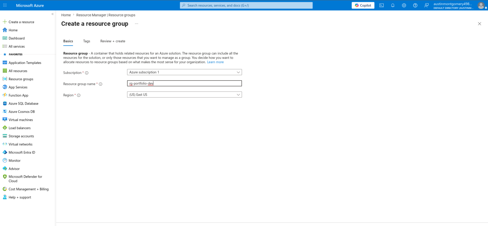
Created a dedicated Resource Group named rg-portfolio-dev in East US to logically organize and manage all project resources.
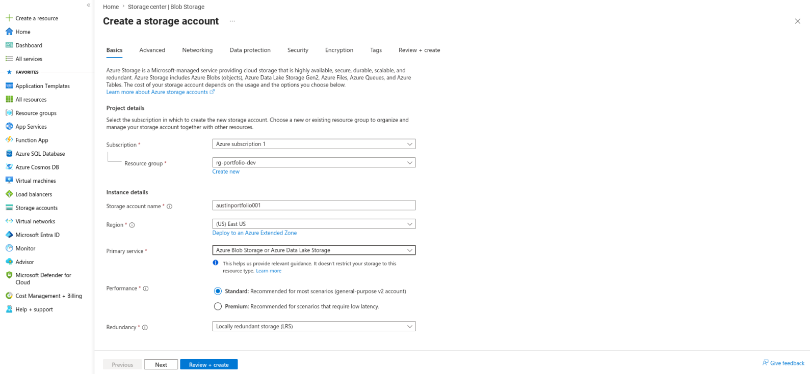
Created Storage Account austinportfolio001 using Azure Blob Storage, Standard performance, and Locally Redundant Storage (LRS) to provide a cost-effective hosting platform.
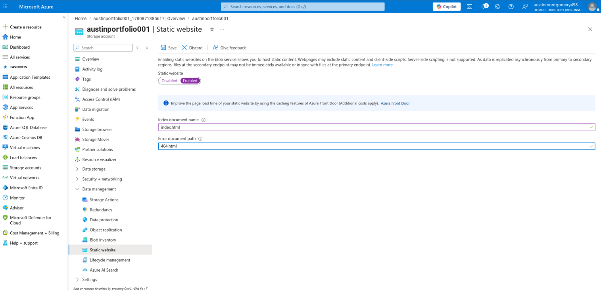
Enabled Static Website Hosting and configured index.html as the default document and 404.html as the custom error page.
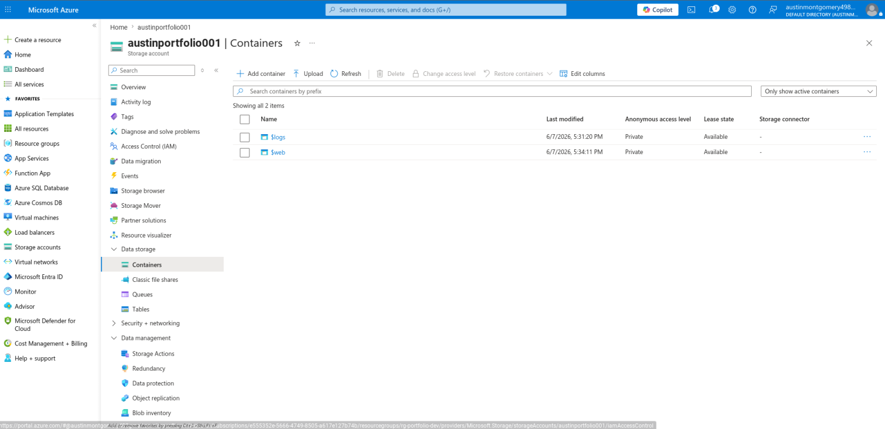
Navigated to the automatically created $web container, which serves as the root directory for Azure Static Website Hosting.
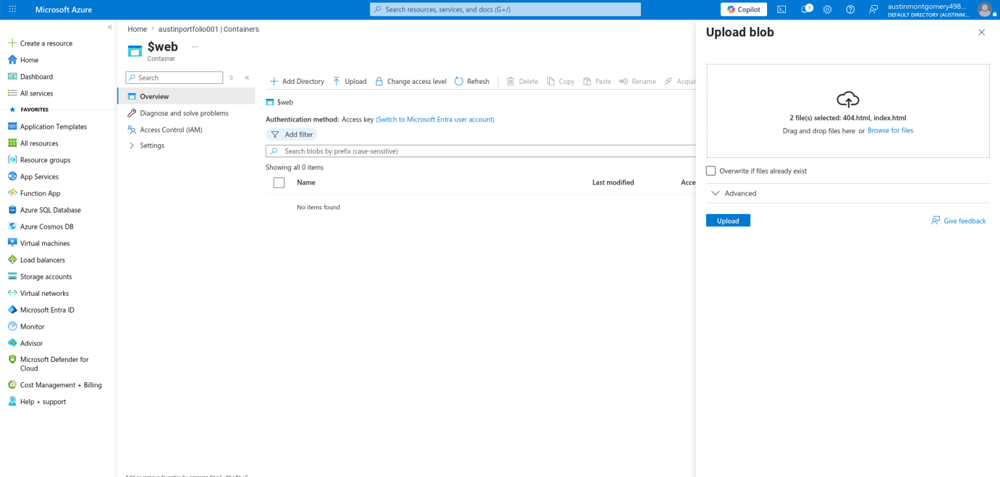
Uploaded index.html and 404.html into the $web container to deploy the initial version of the website.
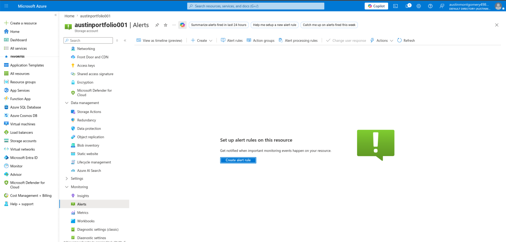
Accessed Azure Monitor through the Storage Account and prepared monitoring rules to track website activity.
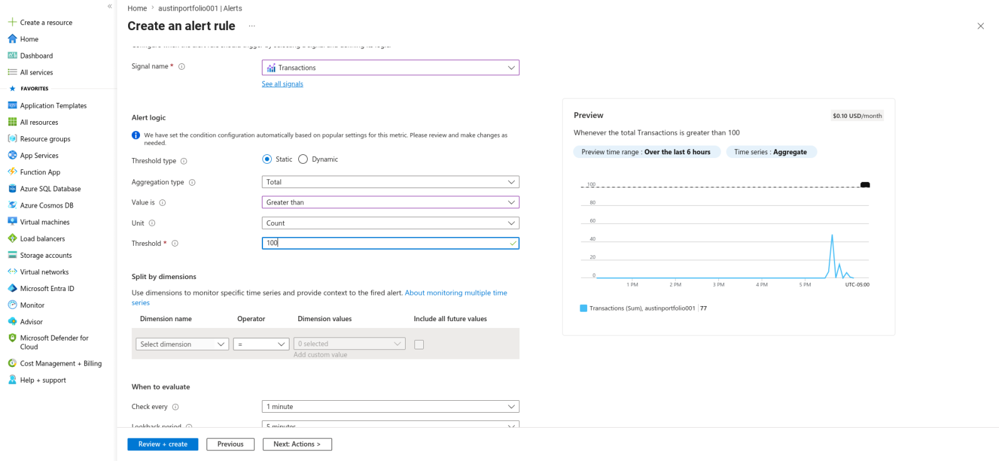
Created a Transactions metric alert using a static threshold. The alert triggers when total transactions exceed 100.
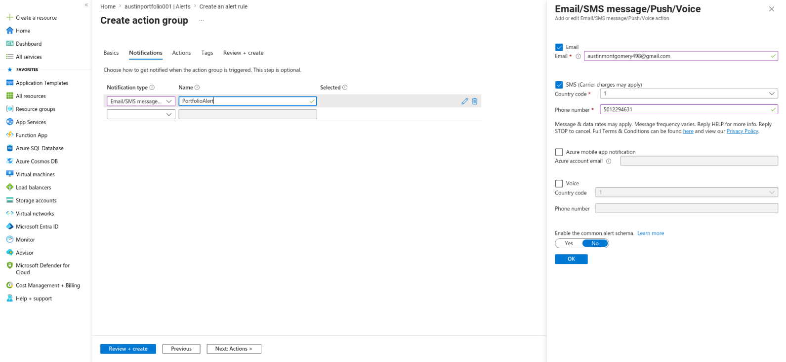
Configured email and SMS notifications through an Action Group named PortfolioAlerts to provide real-time awareness of monitored events.
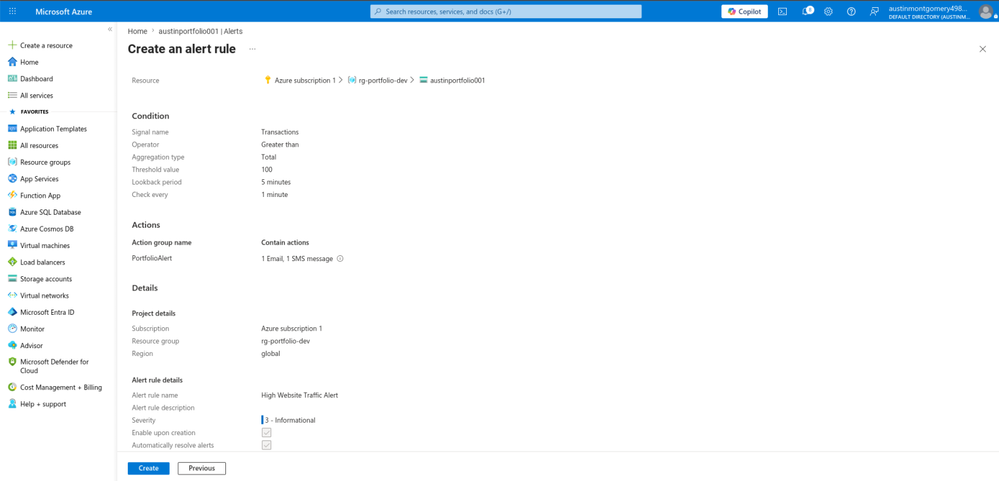
Reviewed the complete monitoring configuration and finalized the alert rule named High Website Traffic Alert.
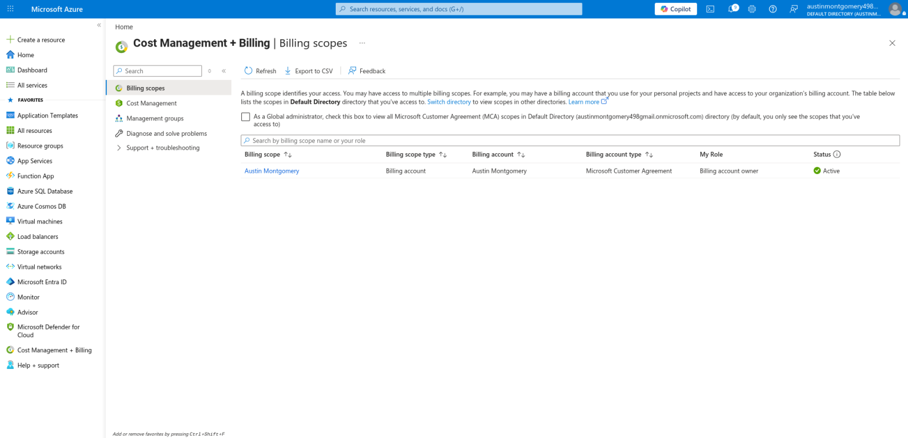
Opened Azure Cost Management to monitor spending, review billing data, and implement governance controls.
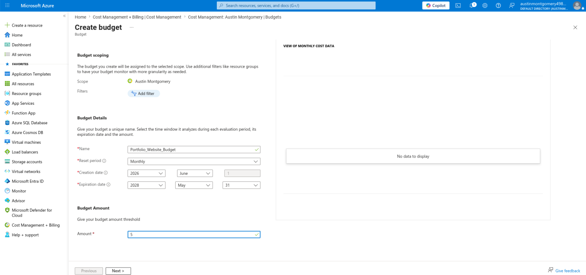
Created a monthly budget named Portfolio_Website_Budget with a spending limit of $5 per month.
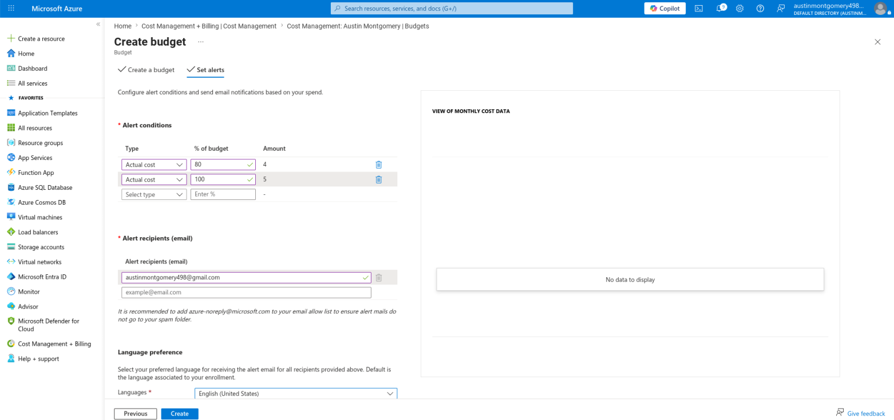
Configured automated email alerts at 80% and 100% budget utilization to support proactive cost management.
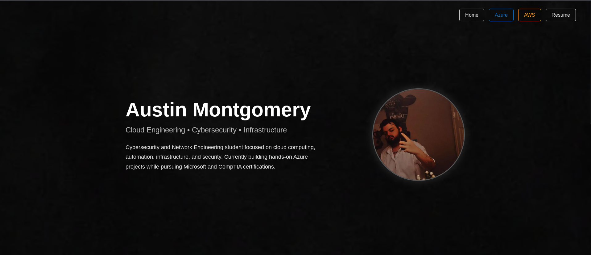
After validating the Azure infrastructure, the website was redesigned into a professional portfolio platform with dedicated Azure, AWS, and Resume sections.
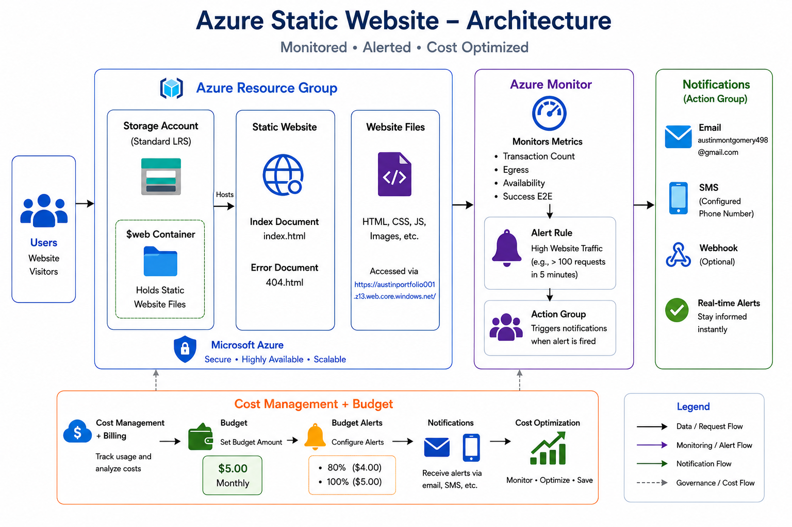
This project reinforced the importance of selecting cloud services based on workload requirements, implementing monitoring from the start, and applying cost controls even to small deployments. It also provided practical experience with cloud governance concepts that extend beyond basic resource deployment.
The project successfully delivered a cloud-hosted portfolio platform backed by Azure Storage, monitoring, alerting, and cost governance features. It now serves as the foundation for future Azure, AWS, networking, cybersecurity, and DevOps projects.
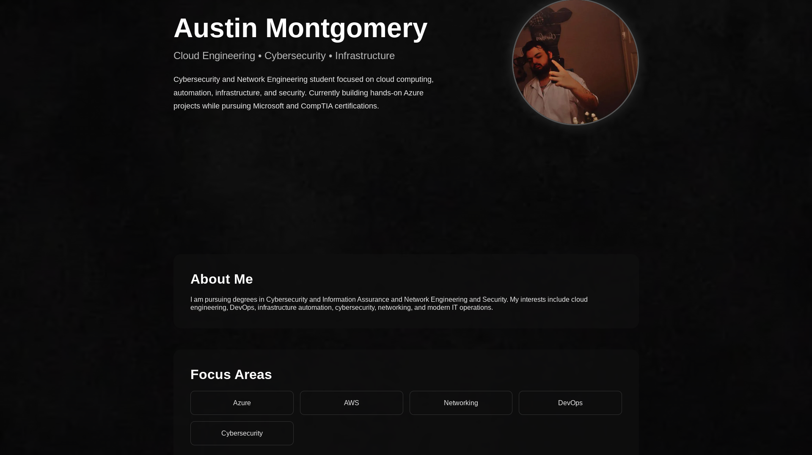